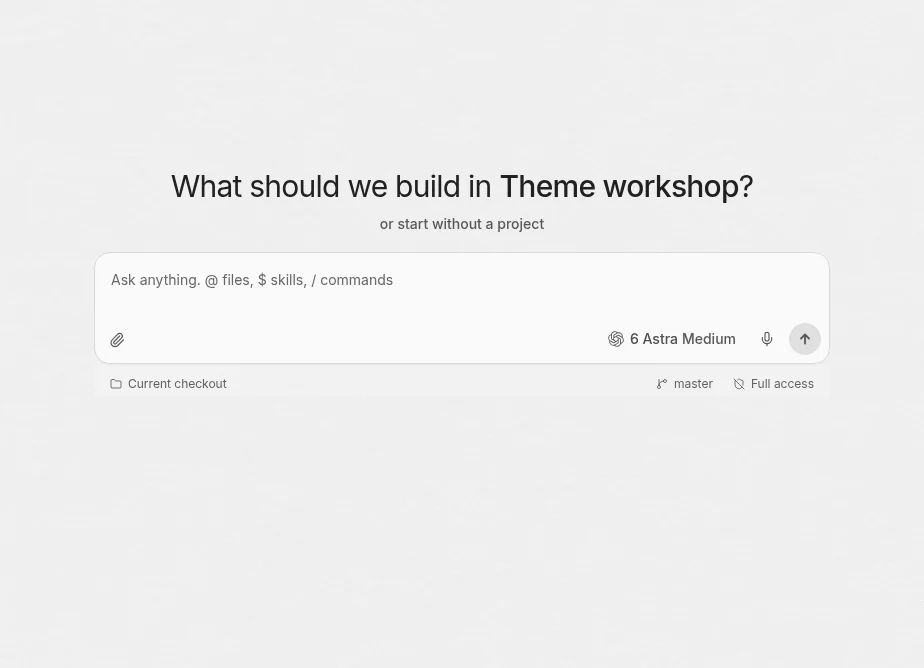

Koi pond
Claude, OpenAI, and Gemini koi swim with their own colors and patterns.
Loading preview…
I've been using T3 Code a lot lately, so I made a couple of themes to get it looking the way I wanted. I'll add more as I make them.
Claude, OpenAI, and Gemini koi swim with their own colors and patterns.
Loading preview…
A still, charcoal grain behind the chat. Light mode flips it to pale gray.
Loading preview…
koi-pond.json.dark-texture.zip.dark-texture.png to ~/.t3/userdata/themes/ so T3 Code can find the wallpaper. Create the folder if needed.t3 theme set ./dark-texture.jsonSwitch between Light and Dark in Settings → Appearance.


I've been using T3 Code a lot lately, so today I made a couple of themes to get it looking the way I wanted. I'll add more here if I make them.
If you've made a theme you'd like to share, open a pull request with the theme JSON and any assets it needs.